Week 4
Eye-tracking with Neuroimaging
Today's roadmap
- Neuroimaging in language research: an overview
- Eye movement data vs. Neuroimaging data
- Co-registration of eye movements and neuroimaging data
- Case: In Search of Prediction during Language Processing
Neuroimaging in language research
Neuroimaging in language research
Electroencephalography (EEG)
- Recording of spontaneous electrical activity of the brain
- 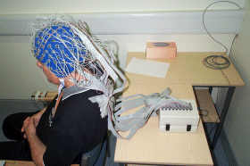 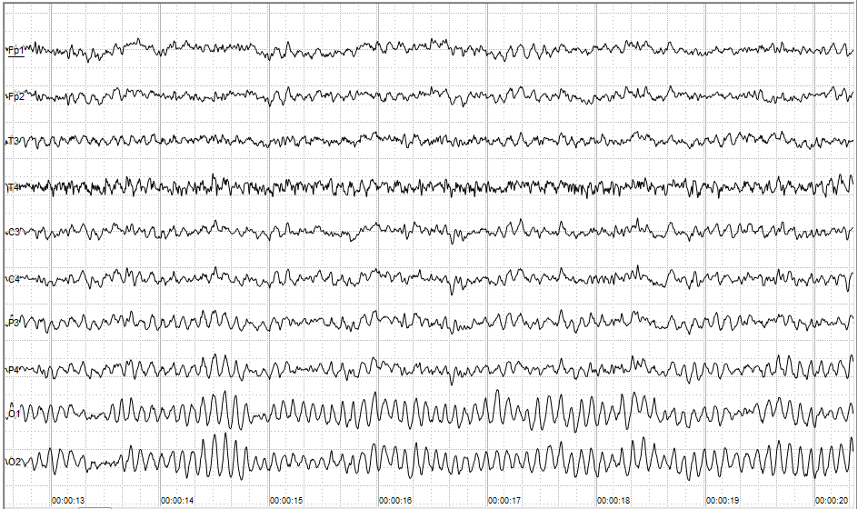
Neuroimaging in language research
Electroencephalography (EEG)
- Recording of spontaneous electrical activity of the brain
- High temporal resolution: data at millisecond scale
- Low spatial resolution: difficult to locate the signal's origin
- Non-invasive: safe for the participant
Neuroimaging in language research
Event-related Potentials (ERPs)
- EEG signals time-locked to the onset of an event
- Averaged ERP response consist of components
Neuroimaging in language research
The N400 and lexical/semantic processing
- A negative-going ERP component peaking around 400ms after stimulus onset
- Larger N400 response to unexpected than expected words
- (1a) I take coffee with cream and sugar.
- (1b) I take coffee with cream and socks.
Neuroimaging in language research
The N400 and lexical/semantic processing
- A negative-going ERP component peaking around 400ms after stimulus onset
- Larger N400 response to unexpected than expected words
- 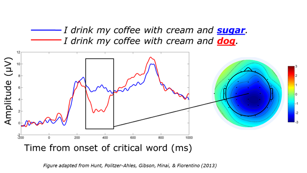
Neuroimaging in language research
Functional Magnetic Resonance Imaging (fMRI)
Neuroimaging in language research
Magnetic Resonance Imaging (MRI)
- Strong magnetic fields causing hydrogen protons to align
- Radio frequency (RF) pulses excite the protons
- Protons emit a signal when returning from excited to equilibrium state
- Scanner captures this signal and computes images
Neuroimaging in language research
Magnetic Resonance Imaging (MRI)
Neuroimaging in language research
Functional Magnetic Resonance Imaging (fMRI)
- A way to acquire MRI images that measures blood-oxygen-level dependent (BOLD) signals
- Provides indirect measure of neural activity:
- When a brain region is activated, it calls for more blood flow
- Which can be measured by the scanner
Neuroimaging in language research
Functional Magnetic Resonance Imaging (fMRI)
- High spatial resolution: images at millimetre scale
- Low temporal resolution: blood reactions are slow
- Non-invasive: safe for the participant
- 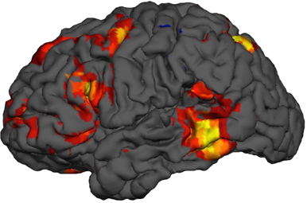
Neuroimaging in language research
Functional Magnetic Resonance Imaging (fMRI)
- The language network:
- 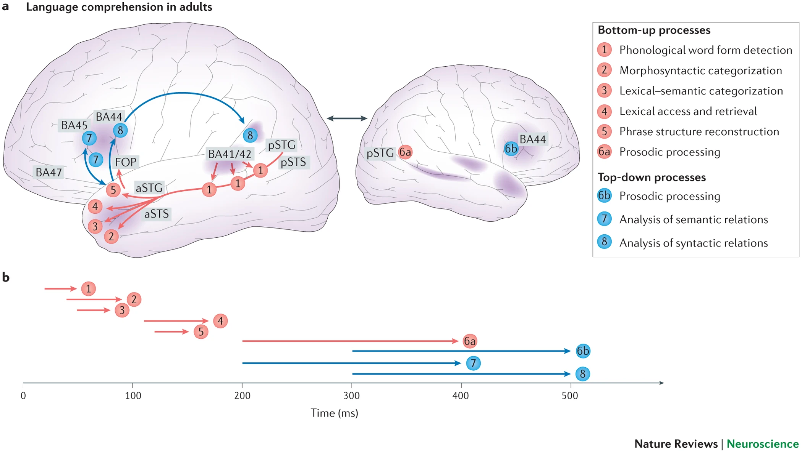
Eye movement vs. Neuroimaging
Eye movement vs. Neuroimaging
- Research benefits from the complementarity of different methods
- Eye movement data can be discussed alongside neuroimaging data
-
For example, comparing predictable and unpredictable words, we find:
- Shorter reading times
- Smaller barin responses (N400)
Co-registration
- Advances in technology allows direct combination of eye-tracking and neuroimaging
- In this case, eye-tracking serves as an index of what is being processsed
- And neuroimaging provides information about how the visual information is processed
Co-registration
Eye-tracking with EEG
- Traditional ERP experiment use rapid serial visual presentation (RSVP)
- (Because eye movements can distort EEG signals)
- But RSVP differs from natural reading experiences
- 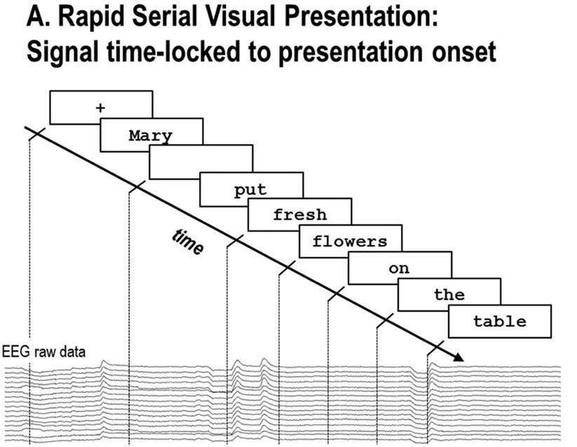
Co-registration
Eye-tracking with EEG
- Eye-tracking-EEG coregistration allows EEG recording in natural reading tasks
- Fixation-related potentials (FRPs)
- 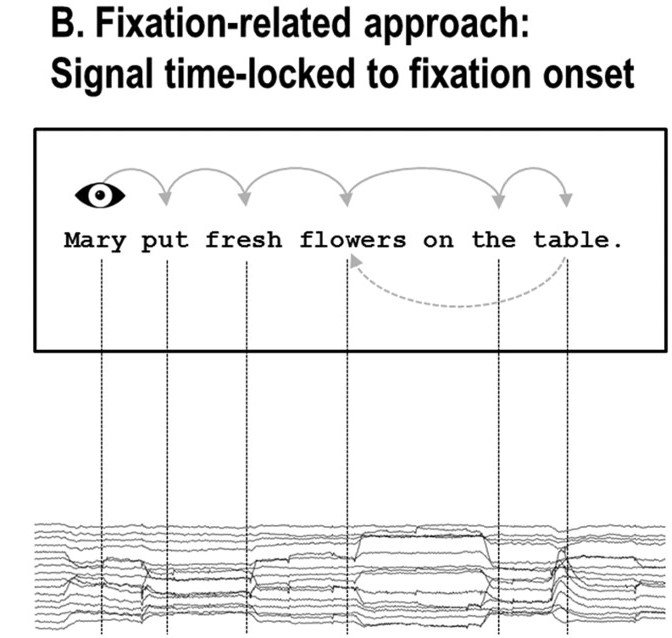
Co-registration
Eye-tracking with fMRI
- Although traditional fMRI experiments use block designs
- Event-related fMRI allows more subtle manipulations
- But without eye-tracking, event-related fMRI suffer from the same limitations of RSVP
- 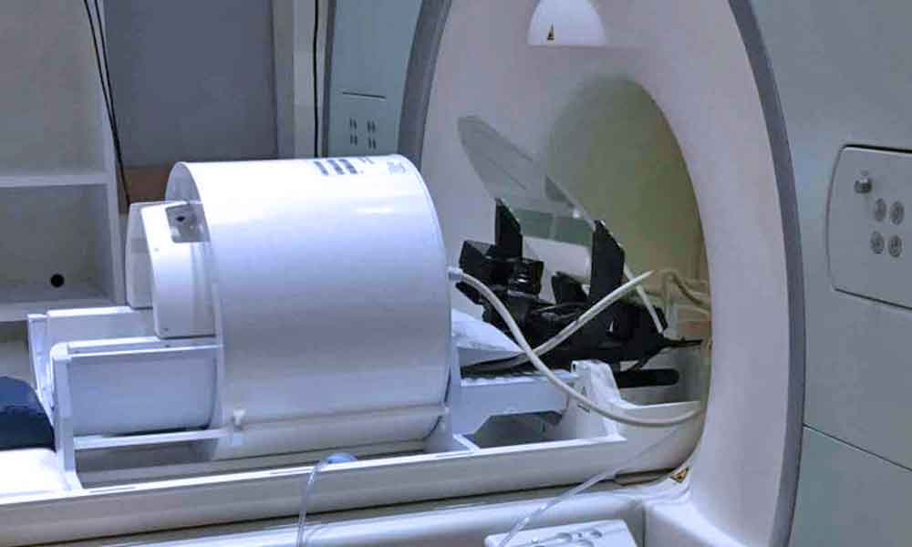 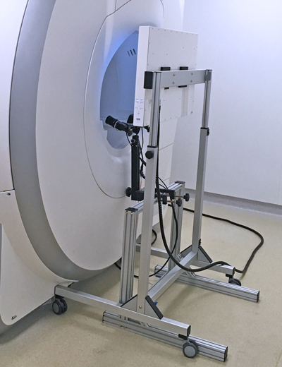
Case: In Search of Prediction during Language Processing
FRPs and the Effect of Predictability
Effects of predictability is well-documented.
Pre- vs. Post-lexical effects:
Are predictable words simply easier to integrate, or
Do people actively predict upcoming language?
FRPs and the Effect of Predictability
Kretzschmar et al. (2009)
(2a) The opposite of black is white. (Expected/ANT)
(2b) The opposite of black is green. (Related-unexpected/REL)
(2c) The opposite of black is cold. (Unrelated-unexpected/NON)
FRPs and the Effect of Predictability
Kretzschmar et al. (2009)
An N400 effect is observed at the last fixation before the target word (cold > green = white).
At which point lexical processing of the target word hadn't begun (only parafoveal preview).
Supporting active prediction of the expected word during reading.
FRPs and the Effect of Predictability
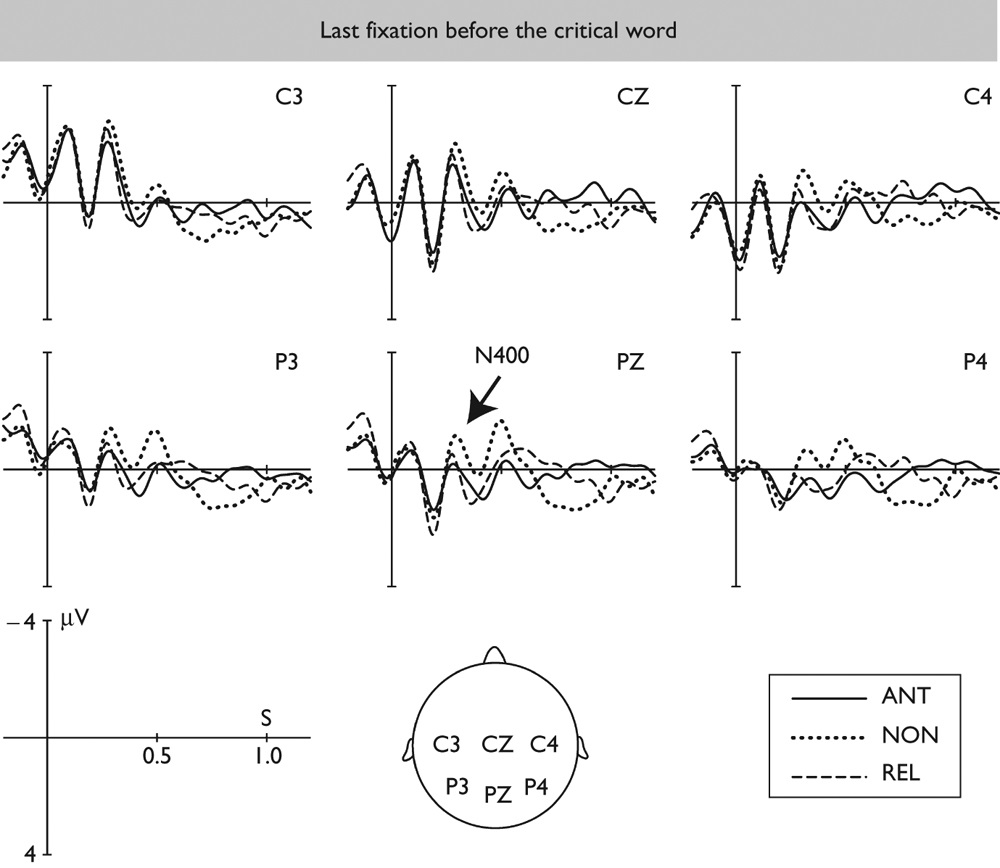
Fixation-related fMRI and Syntactic Prediction
Bonhage et al. (2015)
Predictive gaze reading task:
- RSVP up to the pre-final word
- Delayed display of final word associated with grammatical category
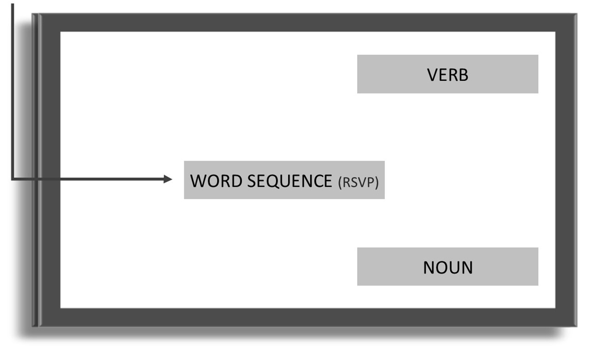
Fixation-related fMRI and Syntactic Prediction
Bonhage et al. (2015)
Predictive gaze reading task:
- RSVP up to the pre-final word
- Delayed display of final word associated with grammatical category
- Anticipatory eye movements toward target location accompanying syntactic prediction
Fixation-related fMRI and Syntactic Prediction
Bonhage et al. (2015)
(3a) Er wollte das wilde Pferd ohne sattel. (Sentence)
He wanted the wild horse without saddle.
(3b) Er wollte das pfirde Sit ohne Wilttel. (Jabberwacky)
(3a) Te Teloh wull Pfirter sit nede wildas. (Non-words)
Fixation-related fMRI and Syntactic Prediction
Bonhage et al. (2015)
- Anticipatory eye movements to the correct grammatical category observed for both Sentence and Jabberwacky, supporting syntactic prediction.
- Fixation-related fMRI reveals brain regions associated with syntactic prediction:
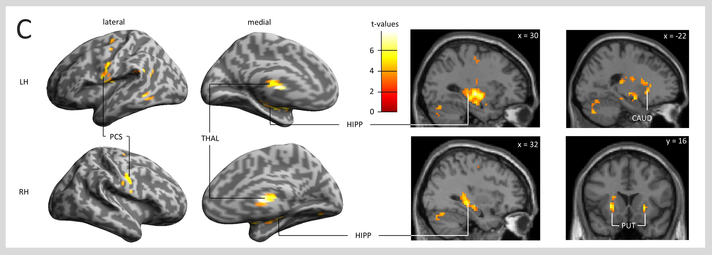
Fixation-related fMRI and Syntactic Prediction
Bonhage et al. (2015)
- Fixation-related fMRI reveals brain regions associated with syntactic prediction.
- Identified regions are associated with linguistic and non-linguistic processing of sequential information.
Today's roadmap
- Neuroimaging in language research: an overview
- Eye movement data vs. Neuroimaging data
- Co-registration of eye movements and neuroimaging data
- Case: In Search of Prediction during Language Processing